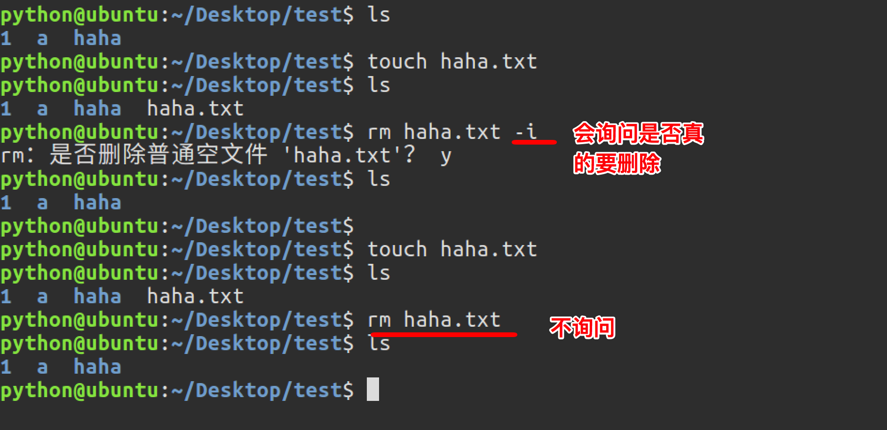
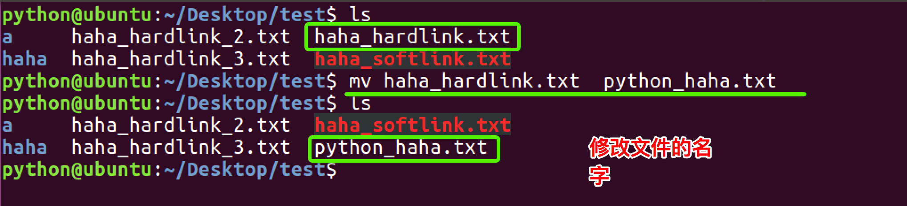

<9>删除目录：rmdir
可使用rmdir命令删除一个目录。必须离开目录，并且目录必须为空目录，不然提示删除失败。
<10>删除文件：rm
可通过rm删除文件或目录。使用rm命令要小心，因为文件删除后不能恢复。为了防止文件误删，可以在rm后使用-i参数以逐个确认要删除的文件。
常用参数及含义如下表所示：
参数 | 含义 |
-i | 以进行交互式方式执行 |
-f | 强制删除，忽略不存在的文件，无需提示 |
-r | 递归地删除目录下的内容，删除文件夹时必须加此参数 |

<11>建立链接文件：ln
Linux链接文件类似于Windows下的快捷方式。
链接文件分为软链接和硬链接。
软链接：软链接不占用磁盘空间，源文件删除则软链接失效。
硬链接：硬链接只能链接普通文件，不能链接目录。
使用格式：
ln 源文件 链接文件
ln -s 源文件 链接文件
如果没有-s选项代表建立一个硬链接文件，两个文件占用相同大小的硬盘空间，即使删除了源文件，链接文件还是存在，所以-s选项是更常见的形式。
注意：如果软链接文件和源文件不在同一个目录，源文件要使用绝对路径，不能使用相对路径。
_files/Image [1].png)
_files/Image [2].png)
_files/Image [3].png)
_files/Image [4].png)
_files/Image [5].png)
_files/Image [6].png)
_files/Image [7].png)
_files/Image [8].png)
<12>查看或者合并文件内容：cat
_files/Snip20161219_72.png)
_files/Image [9].png)
<13>文本搜索：grep
Linux系统中grep命令是一种强大的文本搜索工具，grep允许对文本文件进行模式查找。如果找到匹配模式， grep打印包含模式的所有行。
grep一般格式为：
grep [-选项] ‘搜索内容串’文件名
在grep命令中输入字符串参数时，最好引号或双引号括起来。例如：grep‘a ’1.txt。
常用选项说明：
选项 | 含义 |
-v | 显示不包含匹配文本的所有行（相当于求反） |
-n | 显示匹配行及行号 |
-i | 忽略大小写 |
grep搜索内容串可以是正则表达式。
正则表达式是对字符串操作的一种逻辑公式，就是用事先定义好的一些特定字符、及这些特定字符的组合，组成一个“规则字符串”，这个“规则字符串”用来表达对字符串的一种过滤逻辑。
grep常用正则表达式：
参数 | 含义 |
^a | 行首,搜寻以 m 开头的行；grep -n '^a' 1.txt |
ke$ | 行尾,搜寻以 ke 结束的行；grep -n 'ke$' 1.txt |
[Ss]igna[Ll] | 匹配 [] 里中一系列字符中的一个；搜寻匹配单词signal、signaL、Signal、SignaL的行；grep -n '[Ss]igna[Ll]' 1.txt |
. | (点)匹配一个非换行符的字符；匹配 e 和 e 之间有任意一个字符，可以匹配 eee，eae，eve，但是不匹配 ee，eaae；grep -n 'e.e' 1.txt |
_files/Image [10].png)
<14>查找文件：find
find命令功能非常强大，通常用来在特定的目录下搜索符合条件的文件，也可以用来搜索特定用户属主的文件。
常用用法：
命令 | 含义 |
find ./ -name test.sh | 查找当前目录下所有名为test.sh的文件 |
find ./ -name '*.sh' | 查找当前目录下所有后缀为.sh的文件 |
find ./ -name "[A-Z]*" | 查找当前目录下所有以大写字母开头的文件 |
find /tmp -size 2M | 查找在/tmp 目录下等于2M的文件 |
find /tmp -size +2M | 查找在/tmp 目录下大于2M的文件 |
find /tmp -size -2M | 查找在/tmp 目录下小于2M的文件 |
find ./ -size +4k -size -5M | 查找当前目录下大于4k，小于5M的文件 |
find ./ -perm 0777 | 查找当前目录下权限为 777 的文件或目录 |
_files/Image [11].png)
<15>拷贝文件：cp
cp命令的功能是将给出的文件或目录复制到另一个文件或目录中，相当于DOS下的copy命令。
常用选项说明：
选项 | 含义 |
-f | 已经存在的目标文件而不提示 |
-i | 交互式复制，在覆盖目标文件之前将给出提示要求用户确认 |
-r | 若给出的源文件是目录文件，则cp将递归复制该目录下的所有子目录和文件，目标文件必须为一个目录名。 |
-v | 显示拷贝进度 |
_files/Snip20161219_77.png)
_files/Snip20161219_79.png)
<16>移动文件：mv
用户可以使用mv命令来移动文件或目录，也可以给文件或目录重命名。
常用选项说明：
选项 | 含义 |
-f | 禁止交互式操作，如有覆盖也不会给出提示 |
-i | 确认交互方式操作，如果mv操作将导致对已存在的目标文件的覆盖，系统会询问是否重写，要求用户回答以避免误覆盖文件 |
-v | 显示移动进度 |

_files/Snip20161219_76.png)
作业：
1、在桌面上创建01文件夹、在文件夹里面创建一个1.txt 2.txt 在1.txt里面写入一些内容。并且把内容重定向到3.txt。在01文件下 创建bb/cc/dd/ff 目录 在dd/里面创建04.txt。并且以递归的方式删除bb/cc/dd/ff。然后在01文件下创建05.txt 写入很多字。以more的方式查看
2、rmdir 和 rm -r 的区别
3、ls -a 是干什么用的
4、重定向>和>>有什么区别
5、在桌面上新建一个 11/22/33/44文件夹 在33文件夹里面新建1.txt 2.txt 3.txt 4.html 5.py 6.doc 以通配符的形式把.txt的文件重定向到6.txt了。并且给4.html创建软硬连接。
6、在桌面上创建一个文件夹，名字为load，在load下面有一个文件夹为one,在two文件夹下面有一个文件夹为three文件夹。
7、根据第六题，在two目录下创建几个文件，名字分别为1.py 2.py 3.html team sun.c
和几个目录，名字分别为a b c d ab dc abc
8、通过 通配符查找以.txt结尾的文件
9、通过 通配符查找以tea开头的文件
10、在桌面上新建一个02day文件夹、在文件里面新建一个11.txt 在11.txt里面写入 王淋 刘婷婷 安华峰 崔树 崔永元 王含青 王润泽
用grep 来搜索 姓王的同学 在用grep搜索除了王姓的同学并重定向到 12.txt
在用grep搜索结尾为元的姓名，在重定向追加到12.txt里面
11、在桌面新建一个01文件夹、在里面创建一个02文件夹
在01文件下创建1.py 2.py 3.py 4.txt 6.c 通过通配符的形式把.py的文件cp到02文件下。在把02文件夹改名称03文件夹。在创建一个04/05/06文件夹,在把03文件夹移动到05文件下。在把03里面的2.py改成4.py
12、在桌面新建01 02 03文件夹 在01文件下面新建1.txt 2.txt 3.py xiao.py 5.html 并用通配符的形式把3.py和xiao.py复制到02文件下，用通配符的形式把1.txt 2.txt移动到03文件下。 并把02 03文件夹 移动到01文件夹下